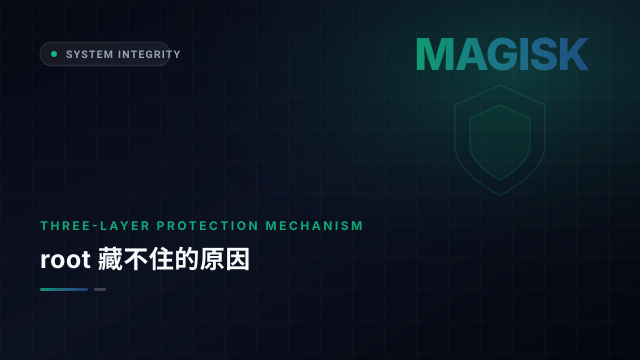

root 藏不住的原因：三层隐藏各管哪一段
获取 Root 权限后，金融与政务等安全敏感类应用往往会触发风控拦截，由此衍生出环境检测与隐藏的分层对抗。本文梳理检测手段如何从常规接口下沉至底层系统调用，对比用户态隔离、内核级隐匿与硬件可信认证三道防线的能力边界，并探讨维持系统环境一致性的工程原则。

问题：root 装上了，应用不让用
最初接触刷机时，我以为拿到最高权限（Root）就万事大吉；后来才发现，真正的难点在于“如何不让敏感应用发现你拿到了权限”。
银行、政务和部分风控较严的日常应用，一旦检测到设备处于 Root 或已解锁状态，就会拒绝启动或直接闪退。它们检查的维度非常多：特定路径下是否存在 su 可执行文件、系统目录是否有异常挂载点、进程内存中是否加载了授权框架模块、系统属性和硬件指纹是否匹配——甚至连 Bootloader 的解锁状态本身，都会被硬件底层记录并上报。
方案：一层一层往上加
环境隐藏并不存在一步到位的通用方案，只能顺着应用检测下探的深度，自上而下逐层构建隔离。
1. 检测方是如何撕开防线的？
早期的检测手段相对简单：通过 Java 层接口扫描已安装应用列表中是否有 Magisk 等管理器，或调用系统标准 C 库（libc）的 access()、open() 函数检查 /system/bin/su 等特征文件是否存在。这类检测停留在常规应用层接口，通过在用户态拦截并改写函数返回值（Hook）即可绕过。
随着攻防演进，商业安全 SDK 与环境检测工具已将探测手段下沉到底层：
- 绕过标准库，直接发起系统调用：应用不再经过容易被拦截的
libc.so标准库，而是在底层原生代码（Native 库）中通过内联汇编直接执行SVC #0（ARM 架构下直接向内核请求服务的底层指令），跳过用户态的所有函数钩子，直接向内核读取当前进程的内存映射表（/proc/self/maps）和文件系统挂载记录（/proc/self/mountinfo）； - 扫描虚拟文件系统（VFS）与挂载痕迹：只要启用了系统定制模块（哪怕只是替换系统字体），文件挂载表中往往会留下
overlay（叠加挂载）或tmpfs（内存临时文件系统）等非原厂挂载特征； - 核查 SELinux 安全策略与审计日志：检测系统的强制访问控制（SELinux）是否被降级为宽容模式（Permissive），或通过访问控制审计日志（AVC）排查是否存在动态注入的权限放行规则。
2. 隐藏方的防御分层
面对越来越深的底层探测，防御逻辑也只能逐层下沉：
- 第一层：用户态注入与命名空间隔离（Zygisk & Shamiko）： Magisk 的 Zygisk 机制通过向 Android 负责孵化所有应用的父进程（Zygote）注入代码，得以在应用启动之初介入环境配置；配套的隐藏模块（如 Shamiko）则会为敏感应用单独开辟隔离的挂载命名空间（Mount Namespace），将涉及定制模块的挂载点从该私有视图中逐一卸载，使应用仅能看到原厂状态的文件目录。
- 第二层：内核级无感授权与 VFS 隐匿（KernelSU / SusFS）：
面对直接向内核发起的底层系统调用，单纯依赖用户态拦截已难以奏效，防御逻辑随之沉入内核层。KernelSU 与 APatch 等方案将权限管控直接构建在内核空间：未经授权的应用进程（按系统分配的 UID 识别）尝试调用
su时，内核会在底层直接拦截并返回“文件不存在”，分区中甚至无需存放传统的su可执行文件；再配合 SusFS 等专为隐藏定制痕迹设计的内核级文件系统补丁，直接在虚拟文件系统（VFS）层面过滤挂载记录、重定向敏感路径并还原文件元数据（如 inode 索引节点与时间戳）。如此一来，即便检测程序绕过标准库直接向内核查询挂载表，也无法读取到异常痕迹。 - 第三层：TEE 硬件凭据与安全区校验（Play Integrity & KeyMint）：
跨出本机系统环境之后，还有一道难以绕过的硬件级认证——Google Play Integrity 与厂商远程证明（Attestation）。认证通常分为三档：Basic（基础环境）、Device（设备完整性）与 Strong（硬件级强凭据）。常规解锁设备虽然可以借助 TrickyStore 等模块拦截系统的密钥管理服务（
keystore2），通过导入外部密钥证书链（keybox）应对 Device 级校验；但面对要求必须由本机安全芯片（TEE / SE）内部固化私钥签名的 Strong 级强校验，纯软件层面的模拟便无能为力。这也解释了为何前文提到的“假回锁”方案在完整性校验上更具优势：由于它在引导极早期维持了未解锁状态，硬件安全区始终认定设备处于原厂受信环境，能够正常签发原生硬件凭据。
3. 避免系统属性撕裂：保持全局原生态
在日常定制中，不少模块为了开启特定高帧率或机型专属功能，会调用属性修改工具（如 resetprop）强行覆写系统的只读机型参数。
但现代操作系统的各层级之间存在极其严格的一致性要求：
- 框架与底层的属性撕裂：
resetprop修改的往往只是用户态内存中的键值。Java 层读取到了新参数，但底层 Native 动态库（如硬件编解码、DRM 证书、音频驱动）依然直接与驱动节点对话，读出的是硬件真实信息。两者不匹配会导致跨层调用时逻辑冲突，引发应用闪退或异常保护； - 终端形态混乱：若随意把手机全局属性改写为其他类别的设备（如平板或大屏设备），许多复杂应用内部的布局分发与安全判定机制会产生剧烈冲突。
最佳实践：系统全局属性尽量保持原生真机纯净，不做无意义的全局修改。若个别工具确需特定环境参数，优先在目标进程范围内做私有隔离，避免污染全局命名空间与属性池。
核心难点与工程排障
- 用户态和内核态的权限差异是结构性的。 检测程序本身跑在用户态，权限天然低于操作系统内核；因此将隐藏逻辑沉入内核后，上层检测工具能探测到的痕迹会大幅减少。
- 环境检测工具通过，不等于目标应用一定放行。 检测工具只核对已知特征，而商业应用往往还会叠加服务端风控、账号历史与设备指纹。实际使用中，工具全绿却被应用拦截、或工具报红但应用正常使用的情况并不少见。
- 内核补丁与管理器版本须严格匹配。 不同分支的内核方案与管理器应用之间存在通信接口差异，跨分支混用容易导致权限管理失效甚至触发系统反复重启。
- 遵循单变量原则逐个启用模块。 批量刷入多个模块后再重启，一旦触发启动循环便很难定位冲突源头；逐一安装并验证系统稳定性，排障成本最低。
- 隐藏层并非堆叠得越多越好。 每多引入一层钩子或拦截模块，不仅会增加系统不稳定的风险，其自身也可能成为新的识别特征。
结论
环境隐藏的本质是针对不同深度的探测手段逐层消除异常特征，不存在一劳永逸的通用方案。而越过本机攻防之后，还有更难逾越的云端硬件认证——软件手段至多只能修饰本机可见的运行状态，却无法篡改硬件安全芯片与厂商云端所记录的设备凭据。
归根结底，最稳妥的策略是将定制与隐藏严格收敛在目标应用的独立作用域内，尽量维持全局系统的原生状态。克制全局修改、避免过度堆叠隐藏层，才是兼顾功能定制与日常稳定性的长久之计。